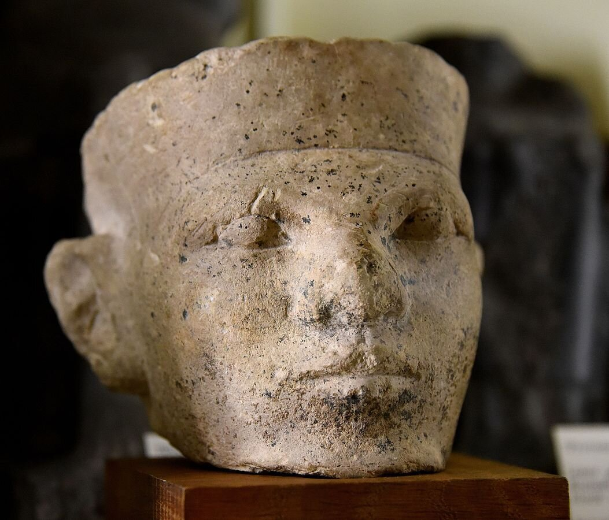
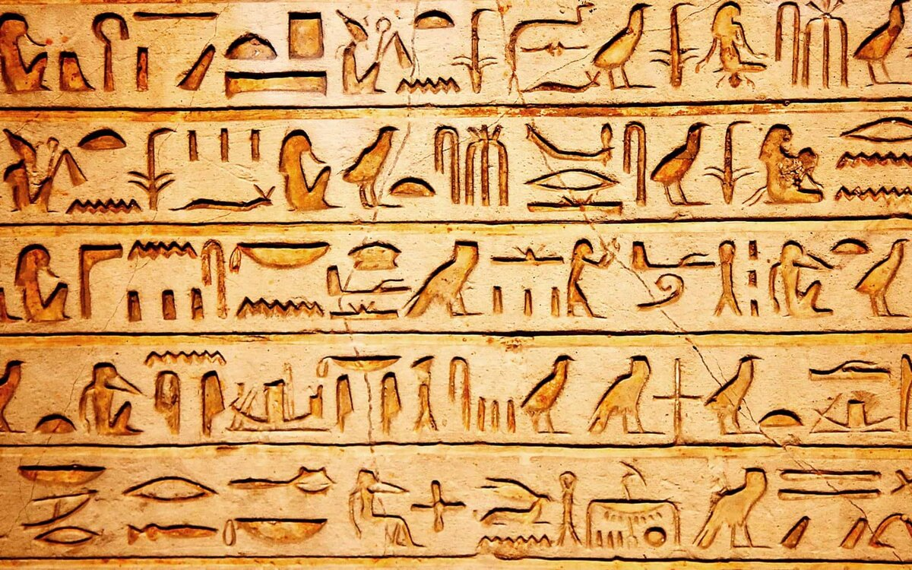
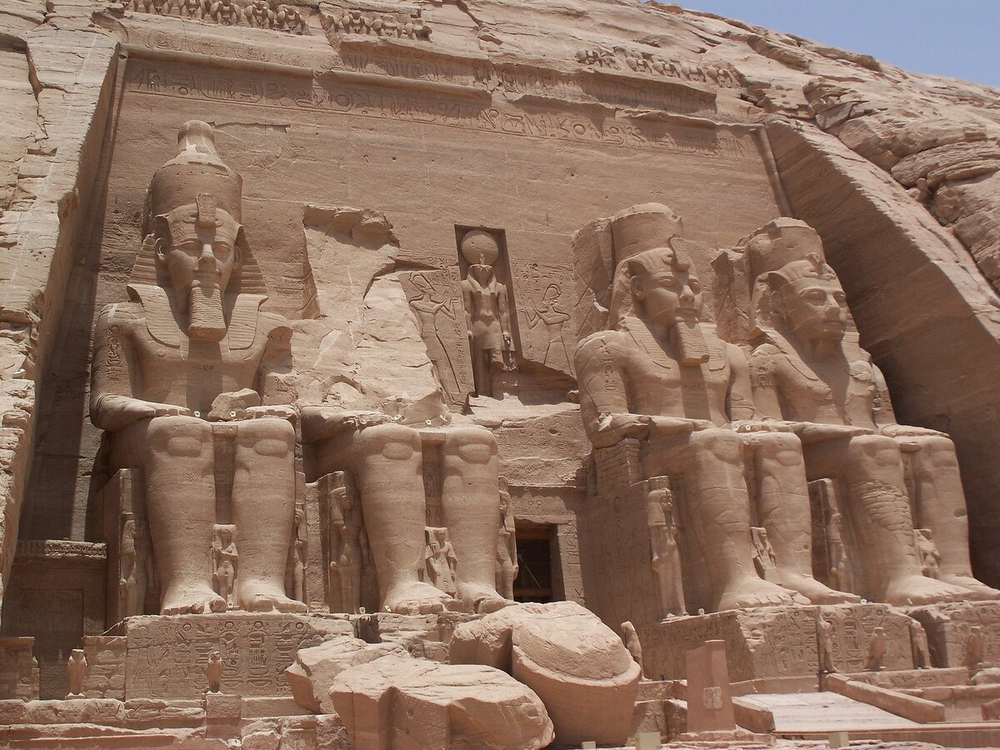
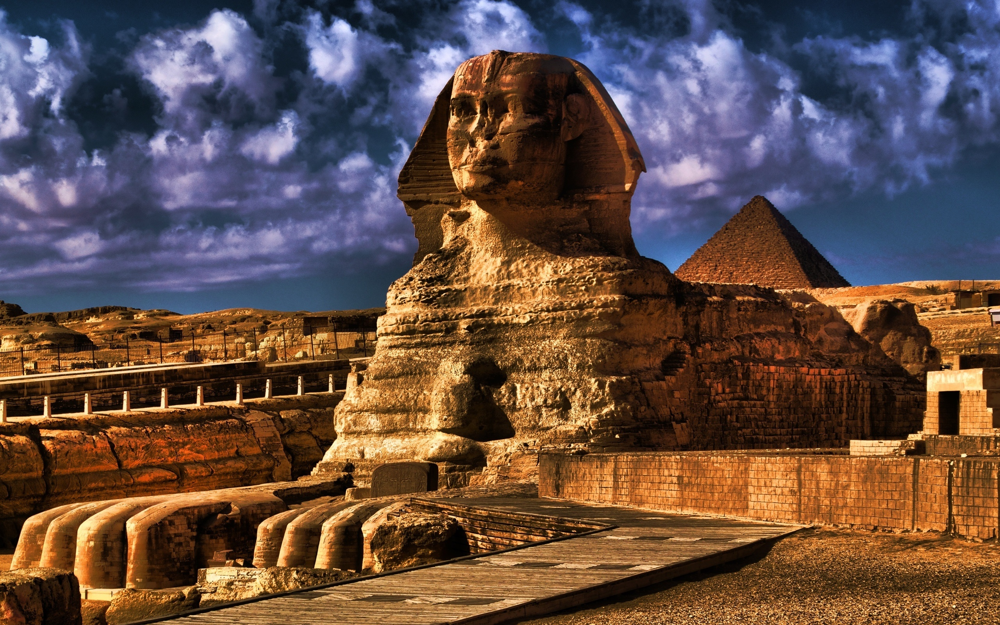

История Древнего Египта начинается с 3100 г. до н.э. в момент правления первого фараона Нармера, объединивший Верхний и Нижний Египет. Империя зародилась и занимала всю долину Нила, самой длиной реки в мире.
Благодаря своим плодородным землям, активно развивалась сельскохозяйственная культура и внешняя торговля. Основным ремеслом египтян было земледелие, скотоводство, охота и рыболовство. Из-за насыщенности ресурсов, в Египте развивались торговые и дипломатические отношения с Передней Азией. Важные переговоры между государствами проходили с помощью послов, где заключались политические и военные соглашения.
Египетский язык является самым древним языком в мире. Египетская письменность состояла из иероглифов. Содержательная часть письма состояла из горизонтальных строчек, читаемых справа налево.
История архитектуры начинается в Древнем Египте. Египтяне строили удивительные дворцы и города, сохранивший свой внешний вид и по сей день. В качестве строительного материала использовали камень, гранит и песчаник.
Социальный статус играл важную роль в Древнем Египте, поэтому египетская общественность была разделена на несколько общин. Для подтверждения своего социального статуса, египтяне надевали украшения из золота, головные уборы и шапки. Мужчины свои волосы сбривали под ноль. Благодаря этому, люди не знали что такое вши. Женщины демонстрировали свое социальное положение надевая полупрозрачные платья из льна. В Египте не освещался брак и пышных свадеб не устраивали. Молодому человеку необходимо было произнести: «Я беру тебя в жены», а молодой женщине ответить: «Ты берешь меня в жены». Обручальные кольца начали носить египтяне, а позже стали практиковать брачные договоры. Молодожены могли обмениваться подарками, а при разводе, каждая сторона имела право подарок вернуть. Неудивительно, что Египет считают самой развитой цивилизацией, так как медицина была на высшем уровне. По сей день, в музеях сохранились медицинские записи, а в современном обществе до сих пор применяют лекарственные препараты. В древней цивилизации существовали специализированные школы. В этих школах находились священные книги, в которых содержались правила для лекарей. Лекарь не нес ответственность за жизнь пациента, если он придерживался правил. В противном случае, его ожидала смертная казнь. Египтяне верили в жизнь после смерти. Они с ответственностью относились к своему переходу. Для этого они строили пирамиды, куда помещали тело умершего человека и его вещи, которые были важны в земной жизни. Здесь важным аспектом является захоронение. Это египтяне придумали процесс мумификации. Для этого они извлекали внутренние органы и помещали в специальные сосуды. Для того чтобы тело не разлагалось, его обрабатывали содой. После просыхания, полости наполняли льном, пропитанным особым бальзамом. В конце, тело умершего человека забинтовывали и закрывали в саркофаг. В Древнем Египте, каждый египтянин верил, что их ожидает суд Осириса, который использует специальные весы для взвешивания хороших и плохих дел. Именно поэтому для египтян было важно прожить правильную жизнь и вести себя подобающе. Во времена правления фараонов, Древний Египет достиг грандиозных достижений: Возникновение математики; Возникновение судебной системы; Развитие медицины; Изобретение иероглифов; Создание системы управления.
История существования Древнего Египта закончилась с момента завоевания государства императором Рима Августом. Египет был освобожден от гнета персов. Время фараонов закончилось. Началась новая эпоха эллинизма.
 Вернуться на главную